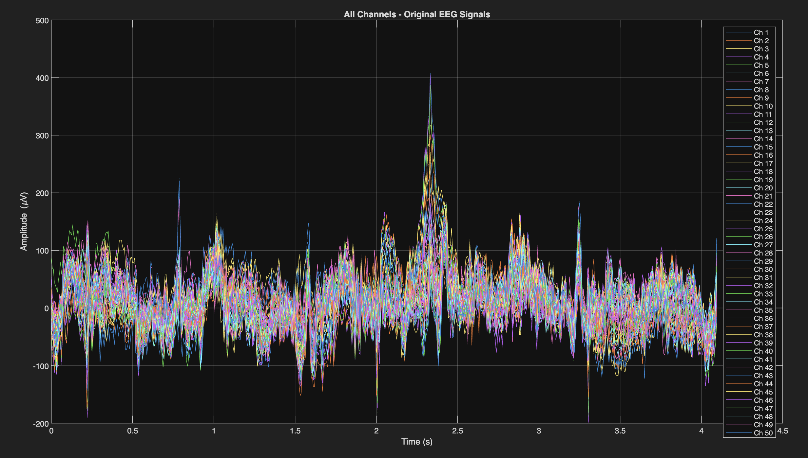
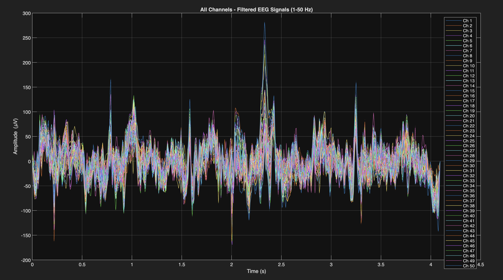
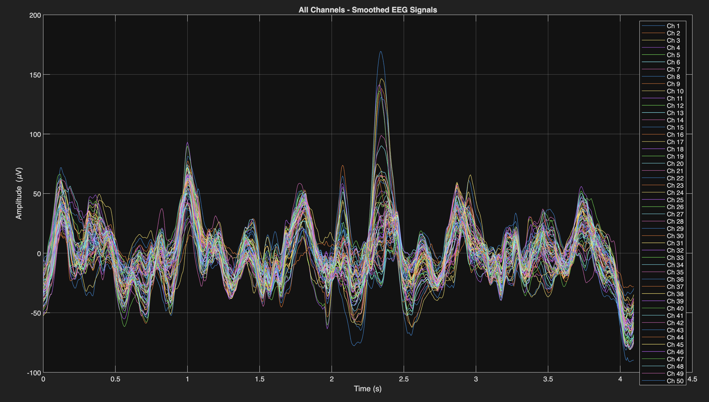

First look at the cleaned signal: 1-50 Hz bandpass + 100ms moving average across all 64 channels.
Before any frequency-domain analysis it is important to see what the raw and lightly cleaned signal looks like in the time domain. This script loads a single segment, applies minimal preprocessing, and produces three overlaid 64-channel plots. The goal is to build intuition about signal amplitude, noise character, and how much the filter and smoother change the signal before committing to a specific preprocessing approach for the full pipeline.
% 1-50 Hz bandpass, 4th-order Butterworth, zero-phase (filtfilt)
bpFilt = designfilt('bandpassiir', 'FilterOrder', 4, ...
'HalfPowerFrequency1', 1, 'HalfPowerFrequency2', 50, ...
'SampleRate', Fs);
% 100 ms moving-average smoothing window
windowSize = round(0.1 * Fs); % = 16 samples at 160 Hz
for ch = 1:nChannels
filtered_data(ch,:) = filtfilt(bpFilt, data(ch,:));
smoothed_data(ch,:) = movmean(filtered_data(ch,:), windowSize);
endThe 1–50 Hz bandpass was chosen to remove DC offset and very slow drift (below 1 Hz) while keeping all physiologically relevant EEG bands: delta (0.5–4), theta (4–8), alpha (8–13), beta (13–30), and lower gamma (30–80 Hz). The 50 Hz upper cutoff sits just below the European power line frequency and well below the Nyquist limit of 80 Hz at the 160 Hz sampling rate.
The 100ms moving average smooths out high-frequency noise without destroying temporal structure. At 160 Hz, 100ms is 16 samples — short enough to preserve event-related features while removing rapid noise bursts.
filtfilt applies the filter forward and backward to achieve zero phase distortion, preserving the timing relationships between channels.
The original signal clearly showed some channels with much higher amplitude than others, and prominent low-frequency drift. After filtering the signal was considerably cleaner. The smoothed version loses fine temporal detail but makes slow trends visible. This suggested that for CNN features, the filtered (not smoothed) signal would be more appropriate.


